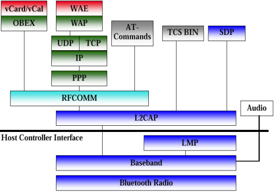

Bluetooth and WLAN
Introduction
This chapter will first
provide an overview over the radio interfaces of Bluetooth and WLAN (IEEE
802.11), as they are essential for the understanding of the discussion
"co-existance, competition and interference".
For the radio transmission
Bluetooth and WLAN (IEEE 802.11b) both uses the unprotected ISM-band (Industrial,
Scientific, Medical) at 2.4 GHz. In the US and in most countries of Europe,
a band of 83.5 MHz width is available. To understand the issue of coexistence
between Bluetooth and WLAN a short description of both radio types is necessary.
The final part of this
chapter will then address why the project team supports the vision of co-existance
between the two standards.
Bluetooth Radio Interface
For Bluetooth transmission
79 RF channels spaced 1 MHz apart are defined. The transmitting frequencies
in the majority of countries can be calculated by:
f
= (2402 + k)
MHz
k= 0,...,78 (channel number)
For
the transfer of the digital data symbols the signal is modulated with the
help of Gaussian Frequency Shift Keying (GFSK). Thereby the transmitting
frequency for the transfer of a logical ONE is increased by at least 115
kHz and is correspondingly decreased for the transfer of a logical ZERO.
To avoid a widening of the power density spectrum and therefore to avoid
a high power consumption, the steep transitions are rounded off in the
base band by the use of a Gaussian Filter. GFSK distinguishes itself by
a cheap and simple modulation technique. The channel bandwidth (20dB transmit
bandwidth) is about 1 MHz and a gross transmission rate of about one 1
Mbit/s is reached.
In
the standard the transmitting power level is classified into three classes:
0 dBm = 1mW, 4 dBm = 2,5 mW and 20 dBm = 100 mW. Products with a transmitting
power of 4 dBm are currently only poor represented on the market. With
1 mW transmitting power a range of approximately 10 m can be reached and
with 100 mW distances of 30 m to 100 m are achieved. The requirement for
a Bluetooth receiver is an actual sensitivity level of -70 dBm or better.
To increase the range at small transmitting power, products with -90 dBm
receiving sensitivity are announced.
A
Frequency Hopping Spread Spectrum technology (FHSS) is applied to combat
interference and fading. The
Bluetooth channel is represented by a pseudo-random hopping sequence hopping
through the 79 RF channels. The hopping sequence is unique for the generated
net and is determined by the Bluetooth device address of the master. The
phase in the hopping sequence is determined by the Bluetooth clock of the
master. The channel is divided into time slots where each slot corresponds
to an RF hop. Consecutive hops correspond to different RF hop frequencies.
The nominal hop rate is 1600 hops/s and therefore the slot length is 625 ms.
All Bluetooth units participating in one net are time and hop synchronised
to the channel. Prior to participating in a net the initiating Bluetooth
node most enter the paging mode. Paging requires an average of 1.3 s to
complete. During paging, the involved devices hop at 3200 hops/s and transmit
very short ID packets with a duration of only 70 msec.With
frequency hopping it is possible to get statistically out of the way of
other interferers in the ISM-band. On the other side Bluetooth is now acting
himself as interferer distributed in time over the whole ISM-Band. Signal
break downs due to interferences caused by multiway spreading are limited
to the short hopping periods. A disadvantage caused by frequency hopping
is the long time of up to 5 s (sometimes 10 s) to build up the Bluetooth
connections.
For
fullduplex transmission, a Time-Division Duplex (TDD) scheme is used. On
the channel, information is exchanged through packets. Each packet is transmitted
on a different hop frequency. A packet nominally covers a single slot,
but can be extended to cover up to five slots. The Bluetooth protocol uses
a combination of circuit and packet switching. Slots can be reserved for
synchronous packets. Bluetooth can support an asynchronous data channel,
up to three simultaneous synchronous voice channels, or a channel which
simultaneously supports asynchronous data and synchronous voice. Each voice
channel supports a 64 kb/s synchronous (voice) channel in each direction.
The asynchronous channel can support maximal 723.2 kb/s asymmetric (and
still up to 57.6 kb/s in the return direction), or 433.9 kb/s symmetric. These
data rates are reduced by other systems in the ISM band like microwave
ovens, WLAN, HomeRF, door opening systems or other independent Bluetooth
nets.
WLAN
Radio Interface
For
802.11b systems both Frequency Hopping Spread Spectrum(FHSS) and Direct
Sequence Spread Spectrum (DSSS)technologies are defined in the IEEE standard.
However almost all of the 802.11b products don’t supply FHSS and therefore
the following is restricted to DSSS.
A
DSSS system spreads the baseband data by directly multiplyingthe baseband
data pulses with a pseudo-noise sequence (PN) that is produced by a pseudo-noise
code generator. A single pulse or a symbol of the PN waveform is called
a chip. One data bit is therefore expressed by several chips and this "spreads"
the data into a large coded stream that takes the full bandwidth of the
channel. Interferences are expected to emerge only in a small frequency
part of the channel. At the receiver, multiplication with the spreading
waveform generates the data signal with its small bandwidth and smuts the
interfering signal over the whole channel bandwidth. In 802.11b systems
the channel bandwidth is 22 MHz and a chipping rate of 11 MHz is used.
As PN sequence a 11-chip Barker code or 8-chip Complementary Code Keying
(CCK) is used. For modulation Differential Quadrature Phase Shift Keying
(DQPSK)or Differential Binary Phase Shift Keying (DBPSK) is applied.As
shown in table 1 this results in bit rates up to 11 Mbit/s with fallback
modes of 5,5 Mbit/s, 2 Mbit/s and 1 Mbit/s.
Table 1: Key characteristics of IEEE 802.11
| Bit Rate |
Spreading |
Modulation |
Symbol Rate |
| 11 Mbit/s |
CCK |
DQPSK |
1.375 MSps |
| 5.5 Mbit/s |
CCK |
DQPSK |
1.375 MSps |
| 2 Mbit/s |
Barker |
DQPSK |
1.0 MSps |
| 1 Mbit/s |
Barker |
DBPSK |
1.0 MSps |
Typical transfer rates for user data are 5 Mbit/s.
For difficult propagation conditions (i.e. larger range, interference,
...), the system uses link adaptation to lower transfer rates. The next
table gives an overview about the different data rates on the physical
layer of 802.11b systems and the corresponding maximum range for open environments
(i.e., outdoor or large halls) and for “closed” environments (i.e. indoor):
Table 2: Use cases (range and capacity) for IEEE 802.11
|
|
11
Mbit/s
|
5.5
Mbit/s
|
2
Mbit/s
|
1
Mbit/s
|
|
Open
environment; range up to
|
150
m
|
250
m
|
300
m
|
400
m
|
|
Closes
Environment, range up to
|
30
m
|
35
m
|
40
m
|
50
m
|
Note that the figures for the ranges are average values
which may vary significantly depending on the specific environment structure.
According to European regulations, in the ISM band,
ranging from 2.400 to 2.4835 GHz, there are 13 overlapping channels with
a separation of 5 MHzavailable for WLANs (with a very few exceptions in
some countries). Avoiding interference the minimum distance between the
centre frequencies is at least 25 MHz. Therefore, up to three non-overlapping
channels are available in the ISM band. Studies show that adjacent cells
will not interfere with each other when the channel spacing uses channel
center frequencies that are 15 MHz apart. The transmitted power of WLAN
systems usually is 100 mW. At a data rate of 11 Mbit/s the receiver sensitivity
should be at least-76 dBm.
Additional information concerning WLAN and other 802.11
systems, DECT and Home RF in comparison to Bluetooth is given in the project
report of PIR 3.6: „State-of-the-art-study: Alternative technologies and
mechanisms“ (P1118-doc36.pdf
).

Fig.
1: WLAN and Bluetooth RF channels in the ISM-Band at 2.4 GHz in most European
countries
Mutual interferences
Fig. 1 shows some
possible WLAN channels and the Bluetooth RF channels available in most
European countries. Bluetooth is hopping over 79 RF channels with a bandwidth
of 1 MHz. It can be estimated that a frequency hop of one active Bluetooth
transmitter overlaps a WLAN channel with a probability of about 20% - 25%since
the power density at the boarder of a WLAN channel decreases.
In order to determine the
degree to which the radios will cause harmful interference to each other,
a number of assumptions are necessary. It is difficult, if not impossible,
to define a “typical” network topology. User scenarios and even indoor
propagation models can be rather subjective. However, by using some reasonable
assumptions, analysis of the interference caused by co-location of the
two radio types can proceed.
These assumptions must
include:
a. a network topology and
user density
b. propagation model
c. network traffic loads
for IEEE 802.11b and Bluetooth
A simplified indoor propagation
model has been proposed by A.Kamerman, Lucent Technologies. Line-of-sight
propagation is assumed for the first 8 meters. Beyond this point, path
loss increases as a function of rn, where r is
range and n = 3.3. This can be expressed in terms of decibels:
Lpath=20 log (4 pi r / lambda
),
r < 8 m (1)
=
58.3
+ 33 log ( r / 8
),
r > 8 m (2)
where:
lambda = free space
wavelength @ 2.45 GHz (0.1224 m)
r = range (m)
Bluetooth interferes WLAN
The impact of Bluetooth personal area networks on
a WLAN system is investigated in a paper written by Jim Zyren with the
title: „The reliability of IEEE 802.11 Hi Rate DSSS WLANs in a high density
Bluetooth environment“ (
Bluetooth-WLAN-interference.pdf).
A high density environment has been postulated.
Large numbers of both types of devices are present within the topology
analysed. In addition, traffic loads are assumed for the Bluetooth piconets.
This paper focuses exclusively on the reliability of the IEEE 802.11b high
speed wireless network in the presence of interference from Bluetooth radios.
For the purpose of this analysis, the following
assumptions were made:
· WLAN mobile station may be located up to
20 meters from theWLANaccess point
·
The average density is one WLAN mobile station every 25 sq. meters
·
The transmitter power for both WLAN mobile nodes and the WLAN access point
is +20dBm
·
There is one Bluetooth piconet co-located with each WLAN node.
·
The Bluetooth piconet consists of two or more Bluetooth devices which are
capable of establishing at least a point-to-point link.
·
The Bluetooth devices are limited to 0 dBm transmit power.
The degree to which an IEEE 802.11b terminal is
susceptible to interference from nearby Bluetooth transmitters is clearly
dependent upon the strength of the desired DSSS signal from the access
point.
An 11 Mbps DSSS radio can provide reliable service
with a narrow band interferer (such as a Bluetooth transmitter) falling
within its pass band as long as the Signal-to-Interference Ratio (SIR)
is greater than roughly 10 dB. This approximation is conservative and
has been verified in lab tests. Therefore, if the Bluetooth signal is more
than 10 dB below the DSSS signal, it will not cause significant interference.
However, when the Bluetooth interference exceeds the 10 dB SIR threshold,
the DSSS terminal will experience a dropped packet provided there is an
overlap in time and frequency. Therefore, the number of potential Bluetooth
interferers to which a DSSS node is exposed to depends on the range from
the AP.
However, there is only about a 25% probability
that an active Bluetooth transmitter will be in the DSSS passband on any
given hop period. It should also be mentioned that the probability
of collision is further reduced by the fact that the Bluetooth transmitter
is only active for 366 msec in each 625 msec Bluetooth hopping period.
Accurate estimates of IEEE 802.11b network throughput
in the presence of a single but fully loaded Bluetooth interferer must
account for the possibility of Bluetooth collisions with ACK packets, and
network overhead associated with re-contention for the network in the event
the transmitting station fails to receive an ACK. This results in a drop
down of the WLAN throughput rate from about 6 Mbit/s without interferences
to 3.5 Mbit/s at a typical packet size of 750 bytes.
Generally the following conclusions can be drawn from
the study and simulations of Jim Zyren:
1.) The degree of interference experienced in any
installation is dependent on local propagation conditions, the density
of Bluetooth piconets, and Bluetooth piconet loading.
2.) IEEE 802.11b DSSS WLAN susceptibility to Bluetooth
interference increases as a function of range from the DSSS wireless node
to the DSSS AP
3.) IEEE 802.11b DSSS Hi Rate systems show graceful
degradation in the presence of significant levels of Bluetooth interference
4.) Based on typical utilisation models of Bluetooth
piconets, IEEE 802.11b High Speed WLANs show good reliability even in a
fairly dense environment of Bluetooth piconets. (for details look at thepaper
of Jim Zyren)
WLAN interferes Bluetooth
The impact of a 20dBm 802.11 Direct-Sequence WLAN
system on a 0dBm Bluetooth link is studied in a paper written by Jaap C.
Haartsen and Stefan Zürbes, Ericsson, with the title: „Bluetooth voice
and data performance in 802.11 DS WLAN environment“ (
Bluetooth-WLAN-interference.pdf).
Thereby simulation results are presented.
For the interference studies, a typical office environment
with 2 WLAN access points is assumed. WLAN terminals are uniformly distributed
with a density of one terminal per 25 m2. A single access point
serves 50 WLAN terminals. It is also assumed that a single Bluetooth piconet
is associated with each WLAN terminal. Because of the distance between
the WLAN terminals and the low Bluetooth transmit power the mutual interference
between Bluetooth piconets is ignored.
The performance of the Bluetooth terminal is determined
by the intended power received and the interfering power received, or the
total C/I. This in turn will depend on
1. The distance between the Bluetooth receiver and
Bluetooth transmitter
2. The distance between the Bluetooth receiver and
the WLAN terminal transmitter
3. The distance between the Bluetooth receiver and
the WLAN access point transmitter
When transmitting in its 22 MHz channel, the WLAN
system effectively occupies about 17MHz of the 2.45GHz ISM band (20dBm
bandwidth). The total amount of power transmitted amounts to 20dBm. When
the Bluetooth receiver hops in the WLAN band, it filters out the Bluetooth
hop bandwidth. For the Bluetooth receiver, the WLAN signal is regarded
as white noise. Assuming a 0.85MHz noise bandwidth in the Bluetooth receiver,
a filter suppression of 13dB is achieved. With a C/N required of 17dB @
10-3BER, the required C/I towards a WLAN transmitter amounts
to 4dB. The Bluetooth system transmits with a 0dBm power level. The 20dB
transmit bandwidth is 1MHz.
For the range of interference, it is distinguished
between voice and data performance. The Bluetooth data channel applies
retransmission and can therefore cope with a higher packet erasure rate
(PER) than voice. For the performance thresholds (the thresholds where
still acceptable performance is experienced), PER=10% for data and PER=1%
for voice was chosen. These two values must be considered with care since
the user experience is largely determined by the time period the interference
lasts. For example, a 2% PER for a period of 10 seconds in a voice connection
will be more annoying to the user than a 10% PER in a period of 100ms.
Under normal traffic conditions in the WLAN (40 emails,
20 file transfers and 1000 Internet accesses per WLAN terminal in 8 hours,
resulting in a total transfer of approximately 11 Mbyte per terminal),
the Bluetooth voice user is not affected as long as his operating distance
remains below 2m. If the operating distance increases to 10m, the probability
that there is a noticeable interference on the link increases to 8%. The
Bluetooth data link allows and experiences more degradation. A throughput
reduction of more than 10% occurs with 24% probability at an operating
distance of 10m. However, because of the limited frequency overlap of the
WLAN and Bluetooth systems, the throughput reduction in the Bluetooth system
can never exceed 22%, if only one WLAN system is installed.
Measurements
Measurements especially including mutual interferences
with WLAN are shown in the measurement section "
Radio
Measurements".
Co-existance of Bluetooth and WLAN
The project members have performed tests which demonstrate
that both Bluetooth and WLAN can co-exist in the same area, and even in
the same devices (e.g. Laptop). Both technologies have their preferred
area of usage, and these areas are almost complementary rather than competitive.
WLAN dominates in the area of data connectivity, with the implementation
of the wireless Ethernet. Bluetooth dominates in the "Personal Area Networking"
domain, interconnecting all devices of your personal sphere, as e.g. Mobile
Phone, PDA, Camera, Stereo, PC. Bluetooth has also implemented voice support
(
see own section on this topic).
The Specifications of both systems describe how the technology works,
i.e. Bluetooth resp. WLAN protocol architecture. While the WLAN architecture
only covers the lower layers 1-3, Bluetooth covers the whole range from
layer 1 (radio) to layer 7 (applications). A visualisation of the Bluetooth
protocoll architecture is provided in figure 2, further information is
available in the chapter on Bluetooth
profiles.

Figure 2: The Bluetooth architecture,
protocolls related to the OSI model
In summarising the above chapter, our
assumption is a co-existance of WLAN and Bluetooth is the most likely scenario
in the future. An assumption which is supported by the comparison of both
technologies (see table 3)
Table
3: Comparison of Bluetooth and WLAN
|
|
Bluetooth
|
WLAN
(802.11, 802.11b)
|
|
Data rate
|
4-700 kbps
|
4-6 Mbps
|
|
Range
|
10 m, up to 100 m
|
100 meter
|
|
# simultaneous users
|
7
|
10 – 50 depending on application
|
|
Frequency band
|
|
2,4 GHz
|
|
Transmitt power
|
1 mW, 2.5 or 100 mW
|
100 mW
|
|
Interfaces
|
ADSL, Ethernet, ISDN, PSTN, USB, RS232
|
Primary Ehernet
|
|
Support for voice
|
Yes
|
Only VoIP
|
|
Type of clients
|
Inbuilt in PC, PDA, Mobile Phone,
PC-card, CF-card, Memory Stick (Sony), SSD-card, USB dongle, RS-232 Dongle
|
Inbuilt in PC, PC-card, CF-card, RS-232
dongle and Ethernet dongle
|
|
Power management
|
Yes
|
Proprieatairy solutions
|
|
# of parallel systems
|
15 – 50 depending on application
|
3
|
|
Interoperability
|
Yes
|
Through WECA, not through standard
|
Comparison of different access technologies
A more detailed comparison of the different access technologies is
available
in the technical report